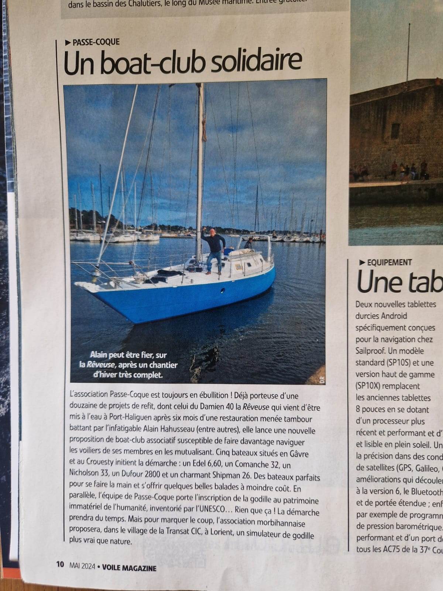

<div class="home-width">

    <div class="background-container-x" style="min-height: 50px; margin-top: 50px;">
        <div class="container"> <!-- image on top -->
            
            <div class="citation-overlay white-outlined">
                We're in the news...
            </div>
        </div>
        <div style="text-align: left; padding: 0 20px; background: white;">
            <div>
                Find here press articles, interviews, videos...
            </div>
        </div>

        <div id="press-container" style="display: block; background: white; margin: 20px;">

            <div style="padding: 0 30px; z-index: 1;">
                <h3>Voile Magazine, January 2026</h3>
                
            </div>

            <div style="padding: 0 30px; z-index: 1;">
                <h3>Voiles et Voiliers, May 30, 2025</h3>
                <iframe src="https://www.facebook.com/plugins/post.php?href=https%3A%2F%2Fwww.facebook.com%2Fvoilesetvoiliers%2Fposts%2Fpfbid0WaHKky7Hj2X1BkWdQwPNwzs41y95fCJKSQfGTbZf8mu1gEa7qzKetoneh1zJmjqHl&show_text=true&width=500"
                        width="500"
                        height="520"
                        style="border:none;overflow:hidden"
                        scrolling="no"
                        frameborder="0"
                        allowfullscreen="true"
                        allow="autoplay; clipboard-write; encrypted-media; picture-in-picture; web-share">
                </iframe>
                <!--iframe src="https://www.facebook.com/100055052334369/posts/1294743665704032/?rdid=odc2qOJKrR5qTM7R#"
                        frameBorder="0"
                        style="width: 98%; height: 400px; border: 1px solid silver; border-radius: 5px; overflow: scroll;"></iframe-->
                <br/>
                <a href="https://www.facebook.com/100055052334369/posts/1294743665704032/?rdid=odc2qOJKrR5qTM7R#"
                   target="_blank">Read in another tab</a>
            </div>

            <div style="padding: 0 30px; z-index: 1;">
                <h3>The Passe-Coque Club in the "Revue Bateaux", October 2024</h3>
                <iframe src="https://www.bateaux.com/article/47171/passe-coque-lance-son-boat-club-pour-permettre-aux-moins-fortunes-de-naviguer"
                        frameBorder="0"
                        style="width: 98%; height: 400px; border: 1px solid silver; border-radius: 5px; overflow: scroll;"></iframe>
                <a href="https://www.bateaux.com/article/47171/passe-coque-lance-son-boat-club-pour-permettre-aux-moins-fortunes-de-naviguer"
                   target="_blank">Read in another tab</a>
            </div>

            <div style="padding: 0 30px; z-index: 1;">
                <h3>Hublow in the "Revue Bateaux", October 2024</h3>
                <iframe src="https://www.bateaux.com/article/47166/hublow-de-l-epave-a-la-cabane-ou-comment-recycler-nos-vieilles-coques"
                        frameBorder="0"
                        style="width: 98%; height: 400px; border: 1px solid silver; border-radius: 5px; overflow: scroll;"></iframe>
                <a href="https://www.bateaux.com/article/47166/hublow-de-l-epave-a-la-cabane-ou-comment-recycler-nos-vieilles-coques"
                   target="_blank">Read in another tab</a>
            </div>

            <div style="padding: 0 30px; z-index: 1;">
                <h3>Hublow on Radio Balises, octobre 2024</h3>
                <span>At 26 min 30 sec</span>
                <iframe src="https://radiobalises.com/station/n-87-habiter-la-rive-gauche/"
                        frameBorder="0"
                        style="width: 98%; height: 400px; border: 1px solid silver; border-radius: 5px; overflow: scroll;"></iframe>
                <a href="https://radiobalises.com/station/n-87-habiter-la-rive-gauche/" target="_blank">Read in another tab</a>
            </div>

            <div style="padding: 0 30px; z-index: 1;">
                <h3>Voile Magazine, April 2024</h3>
                
            </div>

            <div style="padding: 0 30px; z-index: 1;">
                <h3>April 2024</h3>
                <a href="https://blog.globesailor.fr/pourquoi-les-bateaux-plus-anciens-ont-ils-toujours-la-cote/" target="GS">GlobeSailor</a>,
                major actor in the boat renting area,. is promoting Passe-Coque's old boats!
            </div>

            <div style="padding: 0 30px; z-index: 1;">
                <h3>Voile Magazine, March 2024</h3>
                
            </div>

            <div style="padding: 0 30px; z-index: 1;">
                <h3>Annual Municipal Bulletin of Saint-Philibert, 2024</h3>
                
            </div>

            <div style="padding: 0 30px; z-index: 1;">
                <h3>March 2024, two articles in Voile Magazine!</h3>
                
                <br/>
                
            </div>

            <div style="padding: 0 30px; z-index: 1;">
                
                <br/>
                <h3>November 2023, Le T&eacute;l&eacute;gramme</h3>
                
            </div>

            <div style="padding: 0 30px; z-index: 1;">
                <h3>Ouest-France, 2022</h3>
                <iframe src="https://www.ouest-france.fr/bretagne/saint-malo-35400/saint-malo-a-peine-rentre-le-voilier-felicie-se-prepare-deja-pour-sa-prochaine-mission-humanitaire-86da9bbe-fe16-11ec-a745-ac843c869275"
                        style="width: 90%; height: 400px;"
                        title="F&eacute;licie, Ouest-France"></iframe>
                <br/>
                <a href="https://www.ouest-france.fr/bretagne/saint-malo-35400/saint-malo-a-peine-rentre-le-voilier-felicie-se-prepare-deja-pour-sa-prochaine-mission-humanitaire-86da9bbe-fe16-11ec-a745-ac843c869275"
                   target="OF">Read the article</a>
            </div>

        </div>

        <div style="padding: 0 30px; z-index: 1;" style="width: 80%;">
            <h3>Printemps 2023, <a href="https://oceanascommon.org/" target="oac">Ocean as common</a></h3>
            <!-- width="560" height="315" -->
            <iframe class="you-tube-video"
                    src="https://www.youtube.com/embed/2--8OypAHHQ?si=FL7HR6nlcuQuAVOZ"
                    title="YouTube video player" frameborder="0"
                    allow="accelerometer; autoplay; clipboard-write; encrypted-media; gyroscope; picture-in-picture; web-share" allowfullscreen></iframe>
        </div>

        <div id="bottom-filler" style="min-height: 80px;"></div>

    </div>
</div>